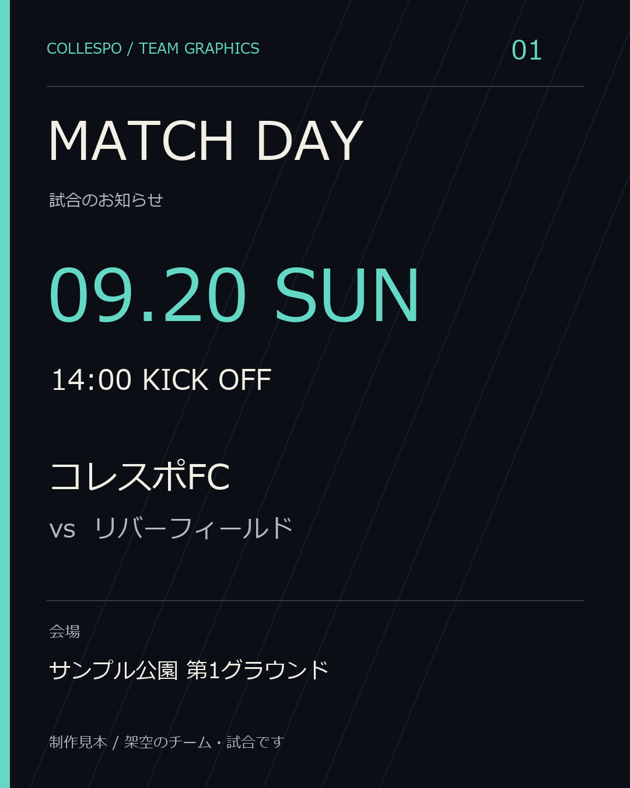
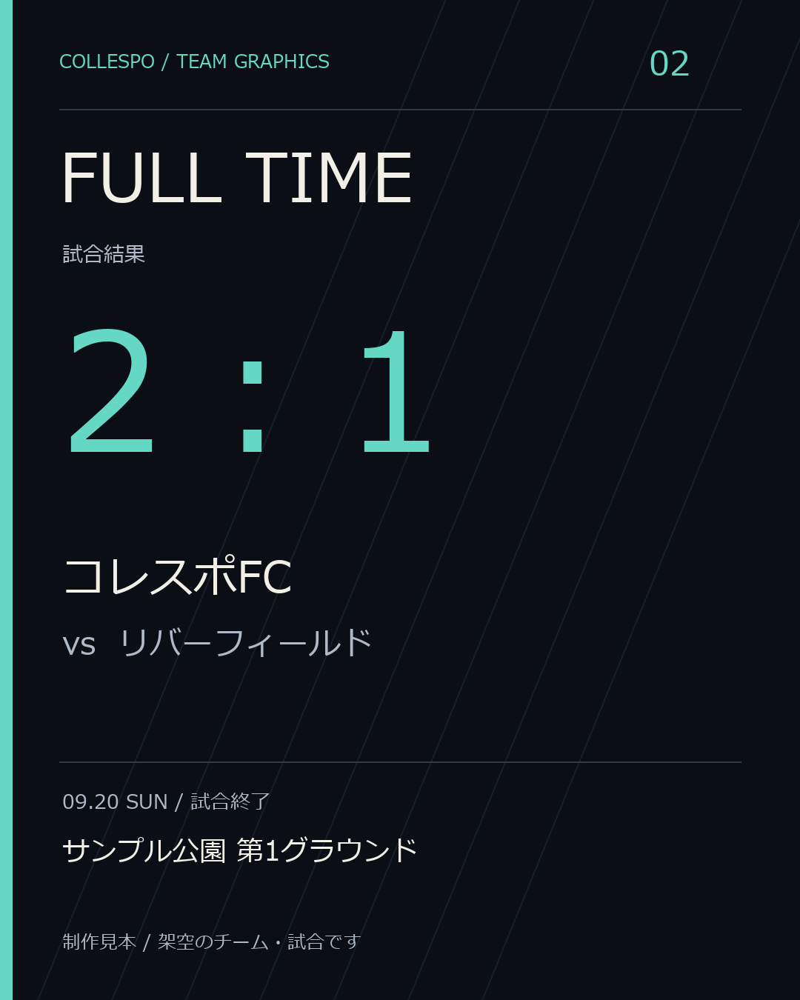
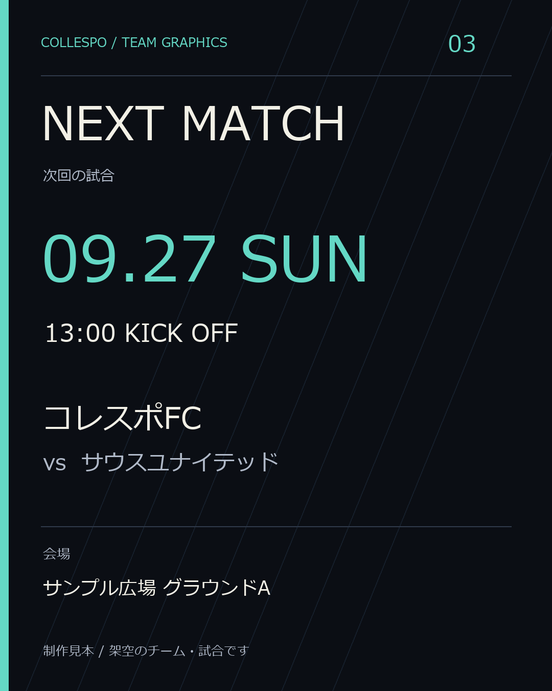

地域チームの広報を、少し軽く。
チームの試合を、
伝わる3枚に。
告知も、結果も、次の試合も。素材と伝えたい情報をお送りいただければ、そのままSNSに載せられる画像に整えます。
草野球・地域のサッカーチームなどの広報担当者向け。現在は個別相談で受付中です。
SAMPLE / 架空のチーム・試合による見本
投稿に、揃った見た目を。
同じ色・文字のルールで、告知から次回予告までつなぎます。実際の納品時はチーム名・色・試合情報を差し替えます。
{kind=link}

{kind=link}

{kind=link}

掲載画像は制作例です。実在する団体との取引実績を示すものではありません。
小口制作プラン
まずは1チーム、1試合分。
3,000円 税込・制作料金の総額
告知・結果・次回予告の3枚を同じデザインで。試合前に告知、終了後に結果を作るなど、受け渡し時期もご相談ください。
決済方法と納期は相談への返信でご案内し、双方の合意後に注文を確定します。このページからの自動決済はありません。
この料金に含まれるもの
- PNG画像3枚 / 各1080 × 1350px
- 1チーム・1試合を中心にした同一デザイン
- チームカラー・支給テキストの反映
- 納品前の修正1回（3枚分をまとめて）
ロゴ制作、写真撮影、情報の取材・収集、投稿代行、別サイズ、編集用データは含みません。追加の作業は事前に見積もります。
必要な情報だけで、相談できます。
01 / 相談
用途と希望日を送る
チーム名、競技、使いたい場面をお知らせください。この時点では注文になりません。
02 / 確認・合意
料金・納期を確認
対応できる日程と決済方法をご案内します。内容への合意後、制作を進めます。
03 / 制作・納品
確認して、投稿へ
支給情報をもとに画像を作成。修正内容をまとめていただき、PNGで納品します。
相談前によくある質問
どんな素材を用意すればいいですか？
チーム名、対戦相手、日時、会場、確定したスコア、次回予定、希望の色をお送りください。写真やロゴはなくても制作できます。使用する場合は、掲載許可を得た素材をご用意ください。
野球でも頼めますか？
はい。見本はサッカーですが、草野球などの試合告知・結果画像もご相談いただけます。複雑な成績表や別形式は、先に対応範囲を確認します。
いつ納品できますか？
素材が揃う日と希望の使用日を確認し、対応可能な納期を返信します。受付状況によりお受けできない場合があります。お急ぎの場合も、まず使用日をお知らせください。
キャンセルや修正はどうなりますか？
相談の段階で料金はかかりません。注文後のキャンセル条件・支払い方法・納品日・修正範囲は、注文を確定する前にご案内します。販売サービスを利用する場合は、そのサービスの取引条件もご確認いただきます。
CONTACT
まずは、作りたいものを教えてください。
下の内容からメールの相談文を作れます。送信はご自身のメールアプリで行います。
相談文ができました。まだ送信されていません。
メールアプリが開かない場合は、issakatou2@gmail.com 宛てに直接お送りください。相談文を作っただけではこちらには届きません。
入力内容はこのページからサーバーへ送信・保存しません。受信したメールはお問い合わせ対応と取引のために使用します。個人情報の取り扱い